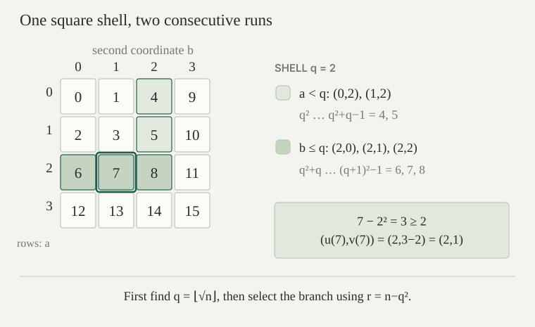

A finite sequence of natural numbers is an ordered list \(s=[a_0,\ldots,a_{k-1}]\), where \(k\in\mathbb N\) and every \(a_i\in\mathbb N\), including zero. Its length is \(|s|=k\). The empty sequence, written \([]\), has length zero. Prepending \(a\) to \(s\) gives \(a::s=[a,a_0,\ldots,a_{k-1}]\). Concatenation \(s\mathbin{\smallfrown}t\) lists all entries of \(s\) followed by all entries of \(t\), preserving their order. A numerical code should remember the length: \([2]\), \([2,0]\), and \([2,0,0]\) must have different codes.
Countability alone supplies too little. We want explicit operations on the numbers: read an entry, determine the length, and join two sequences. These operations will be primitive recursive. Every search and iteration below has an explicit finite bound. Our particular code uses pairs rather than primes, so it requires no factorization theorem.
Define the square pairing function on natural numbers by
Pairs with \(\max(a,b)=q\) occupy one square shell. The pairs \((a,q)\), \(a<q\), receive the numbers from \(q^2\) to \(q^2+q-1\). The remaining pairs \((q,b)\), \(b\le q\), receive the numbers from \(q^2+q\) to \((q+1)^2-1\). These adjacent intervals neither overlap nor leave a gap. For \(q=0\), the first interval is empty and \(p(0,0)=0\).
For example, \(p(0,1)=1\), \(p(1,0)=2\), \(p(1,1)=3\), \(p(0,2)=4\), and \(p(2,1)=7\). The order of the coordinates matters.
Given \(n\), let \(q\) be the largest natural number with \(q^2\le n\), and put \(r=n-q^2\). Then \(0\le r\le 2q\). Define
The pairing function is a bijection from \(\mathbb N^2\) to \(\mathbb N\), with inverse \((u,v)\):
The largest \(q\) exists: \(0\) is a candidate, and any candidate satisfies \(q\le n\): this is immediate at \(q=0\), and for \(q\ge1\) we have \(q\le q^2\le n\). Thus one may search \(0,\ldots,n\). Maximality gives \(q^2\le n<(q+1)^2\), whence \(r<2q+1\). If \(r<q\), the first branch of pairing sends \((r,q)\) to \(q^2+r=n\). If \(q\le r\), then \(r-q\le q\), and the second branch sends \((q,r-q)\) to the same number. Conversely, the two shell intervals in determine the shell and its branch uniquely, so the decoded coordinates of \(p(a,b)\) are \(a,b\).

For all natural numbers \(a,b,n\),
The upper bound is the upper endpoint of the shell. If \(a<b\), then \(b\ge1\), so \(b^2\ge b\) and \(p(a,b)=b^2+a\ge a+b\). If \(b\le a\), the formula \(a^2+a+b\) gives the lower bound directly. Apply that lower bound to \((u(n),v(n))\) and use \(p(u(n),v(n))=n\). In particular, both decoded coordinates are at most \(n\).
The functions \(p,u,v\) are primitive recursive.
Pairing uses arithmetic and a primitive-recursive choice of cases. To compute \(q=\lfloor\sqrt n\rfloor\), count the positive squares at most \(n\):
Here \(\chi\) is \(1\) when its condition holds and \(0\) otherwise. Exactly \(j=0,\ldots,q-1\) contribute. This includes \(n=0\), when the sum is empty. By bounded summation, \(q\) is primitive recursive. The displayed decoding formulas then use only truncated subtraction and cases. No unbounded search is hidden in taking the square root.
Define the sequence code \(C\) recursively:
Thus \(C([0])=1\), \(C([2])=7\), \(C([2,0])=8\), and \(C([2,0,0])=9\). The extra \(1\) distinguishes every nonempty sequence from the empty one. Injectivity of pairing then distinguishes the first entries and the remaining sequences; induction proves that equal codes represent equal sequences.
More generally, a code of a nonempty sequence exceeds its first entry and its tail code:
Both inequalities follow from . This strict decrease is what permits decoding a whole sequence.
Define \(D(0)=[]\). For \(c>0\), decode \(c-1\) as a pair \((a,t)\) and set \(D(c)=a::D(t)\). This recursion is well founded because \(t\le c-1<c\).
Encoding and decoding are inverse in both directions:
Consequently, \(C\) is a bijection between finite sequences of natural numbers and natural numbers. Every number is a valid code.
For the first identity, induct on the length of \(s\). At a nonempty sequence, unpairing \(p(a,C(s))\) recovers exactly \(a,C(s)\), and the induction hypothesis decodes the tail. For the other direction, use strong induction on \(c\). The case \(0\) is immediate. If \((a,t)=(u(c-1),v(c-1))\), then \(t<c\), and
The same inverse laws prove uniqueness. There is no separate class of malformed list codes in this convention.
Put \(H(0)=T(0)=0\), and for \(c>0\) put \(H(c)=u(c-1)\) and \(T(c)=v(c-1)\). These are the head and tail operations, with a default head of zero for the empty sequence. Define their iterated tail operation by
The superscript denotes iteration, not exponentiation. Because \(T(0)=0\), repeated tails remain zero after the list has ended. Since \(H,T\) are primitive recursive, the function \((c,i)\mapsto T^i(c)\) is primitive recursive by primitive recursion with a parameter.
For every list \(s\), its length is at most \(C(s)\), and each of its entries is strictly less than \(C(s)\). In particular, \(T^c(c)=0\).
The length estimate follows by list induction. It is true for the empty list, and
The first entry is bounded by . An entry in the tail is smaller than the tail code by induction, which is itself smaller than the full code. To handle the empty tail, there simply are no tail entries to bound. Each tail operation removes one entry until the sequence is empty; since \(|D(c)|\le c\), at most \(c\) removals are needed. Further removals preserve zero.
Let \(\operatorname{sg}(x)\) be \(0\) at zero and \(1\) at positive inputs. It is primitive recursive: if \(z\) is the earlier zero test, then \(\operatorname{sg}(x)=1\mathbin{\dot-}z(x)\). Define
Then \(L(C(s))=|s|\). If \(i<|s|\), \(E(C(s),i)\) is the \(i\)-th entry of \(s\), counting from zero; if \(i\ge|s|\), it is \(0\). Both \(L\) and \(E\) are primitive recursive.
For \(j<|s|\), the \(j\)-fold tail is a nonempty list and its code is positive. For \(j\ge|s|\), its code is zero. The bound \(|s|\le C(s)\) therefore makes the sum count exactly the entries. The head of the \(i\)-fold tail gives the indexed entry, including the default after the end. Bounded summation and composition prove primitive recursiveness. Notice that an entry equal to zero is distinguished from an absent entry by its index and \(L(c)\), not by \(E(c,i)\) alone.
Let \(h(z,a)\) be primitive recursive. Starting with an accumulator \(z\), process the entries of \(D(c)\) from left to right by replacing the accumulator by \(h(z,a)\) at entry \(a\). The final accumulator, as a function of \((c,z)\), is primitive recursive.
Encode a state by the pair of the unprocessed tail code \(t\) and accumulator \(z\). If \(t=0\), leave the state fixed; otherwise make the transition
This is a primitive-recursive transition on numerical pair codes. Iterate it exactly \(c\) times from \((c,z)\). An induction on the number of steps shows that each nonempty step consumes the next entry and updates the accumulator once. Empty steps leave it unchanged. The decoding bound ensures that all entries have been processed by step \(c\). Projection of the final pair gives the asserted function. Parameters of \(h\) may be carried along unchanged through this same recursion.
For example, \(h(z,a)=z+a\) with initial accumulator \(0\) computes the sum of the entries; \(h(z,a)=za\) with initial accumulator \(1\) computes their product. Thus the empty sequence has sum \(0\) and product \(1\).
The numerical constructor \(K(a,c)=1+p(a,c)\), reversal \(V(c)=C(\operatorname{rev}(D(c)))\), and concatenation
are primitive recursive. They satisfy \(A(C(s),C(t))=C(s\mathbin{\smallfrown}t)\), including either empty-list case.
The constructor is already primitive recursive. In , use \(h(z,a)=K(a,z)\). Starting at \(0\), the successive accumulators code \([]\), \([a_0]\), \([a_1,a_0]\), and so on. The result is \(V(c)\). Now process the reversed list \(D(V(c))\) with the same update, but start the accumulator at \(d\). The entries are prepended in reverse order, so the final list is \(D(c)\mathbin{\smallfrown}D(d)\). Formally, after processing a prefix \(r\), the accumulator represents \(\operatorname{rev}(r)\mathbin{\smallfrown}D(d)\); induction on that prefix proves the invariant. Apply primitive-recursive fold closure and composition.
Define \(B(m,0)=0\) and \(B(m,n+1)=(m+B(m,n)+1)^2\). This is a primitive-recursive function. If \(|s|\le n\) and every entry of \(s\) is at most \(m\), then
First take \(n=|s|\) and induct on the list. The empty case is \(0\le0\). For \(a::s\), the shell bound and induction hypothesis give
This is \(B(m,|a::s|)\). Also \(B(m,n)\le B(m,n+1)\): the square of a natural number is at least that number, and \(m+B(m,n)+1\ge B(m,n)\). Thus the bound increases with \(n\), proving the assertion for \(|s|\le n\).
Consequently, a bounded search for such a list may search \(c<B(m,n)+1\). The final \(+1\) matters: \(C([0])=B(0,1)=1\). With a primitive-recursive condition on entries, bounded quantifiers check the candidate length and entries. This is a numerical search bound, not an assertion that the search is efficient.
Suppose two values start at \(x_0=a\), \(y_0=b\), and are updated by primitive-recursive functions \(F,G\):
Then \(n\mapsto x_n\) and \(n\mapsto y_n\) are primitive recursive; primitive-recursive initial values and further parameters are allowed.
Use one numerical state \(z_n=p(x_n,y_n)\), with initial state \(p(a,b)\). Its update is
This is ordinary primitive recursion. Induction and the inverse laws identify its projections with the required two sequences. A fixed finite number of values is handled by nested pairs.
For instance, the update \((x,y)\mapsto(y,x+y)\) from \((0,1)\) gives consecutive Fibonacci numbers. Its first projection is therefore primitive recursive. No recursion on two unknown functions has been added to the original definition.
Let \(h(n,c)\) be primitive recursive. There is a unique sequence satisfying
The empty history is used at \(n=0\). Both \(n\mapsto a_n\) and the code of its history are primitive recursive.
Define the history code by ordinary primitive recursion:
The second argument of \(A\) codes the singleton list \([h(n,c_n)]\). Concatenation is primitive recursive, so \(c_n\) is primitive recursive. Inductively, \(c_n=C([a_0,\ldots,a_{n-1}])\) for \(a_n=h(n,c_n)\), which proves existence and primitive recursiveness. If a second sequence obeys the equations, induction identifies its first \(n\) values with these values and then identifies the \(n\)-th value; this proves uniqueness. Additional parameters can be kept throughout.
This is called course-of-values recursion. It does not say that an arbitrary rule on finite histories is primitive recursive: the rule \(h\), acting on the numerical history code, must itself be primitive recursive.
Decode the number \(8\), and compare \(E(8,1)\) with \(E(8,2)\). Does the default zero make the code ambiguous? What changes if the \(+1\) is omitted from the constructor?
Since \((u(7),v(7))=(2,1)\) and \((u(0),v(0))=(0,0)\), we get \(D(8)=[2,0]\), with tail codes \(8,1,0\). Thus \(L(8)=2\), and both \(E(8,1)\) and \(E(8,2)\) equal zero. The first is an actual entry; the second is the default. The length distinguishes them.
Without the constructor's \(+1\), both the empty list and \([0]\) would have code zero, since \(p(0,0)=0\). Unique decoding would fail. This explains why an end marker is mathematical data rather than dispensable notation.